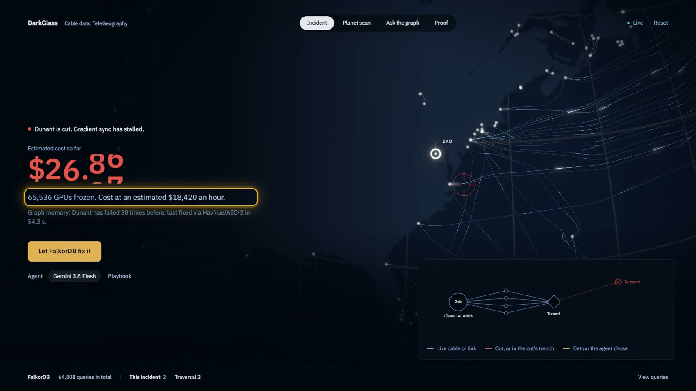
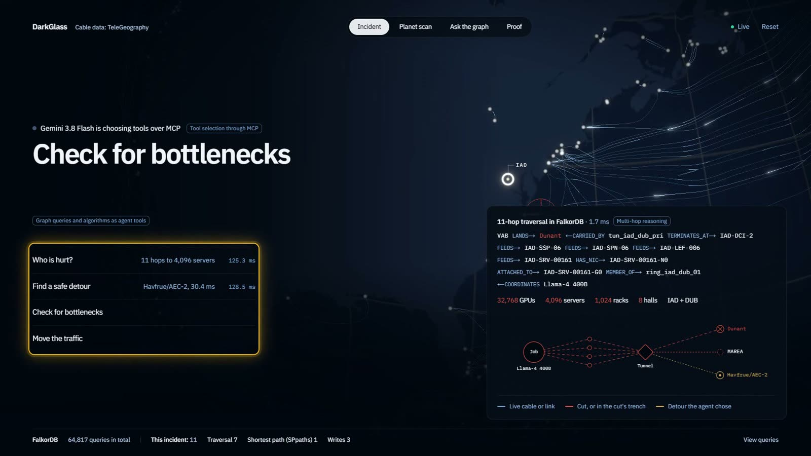
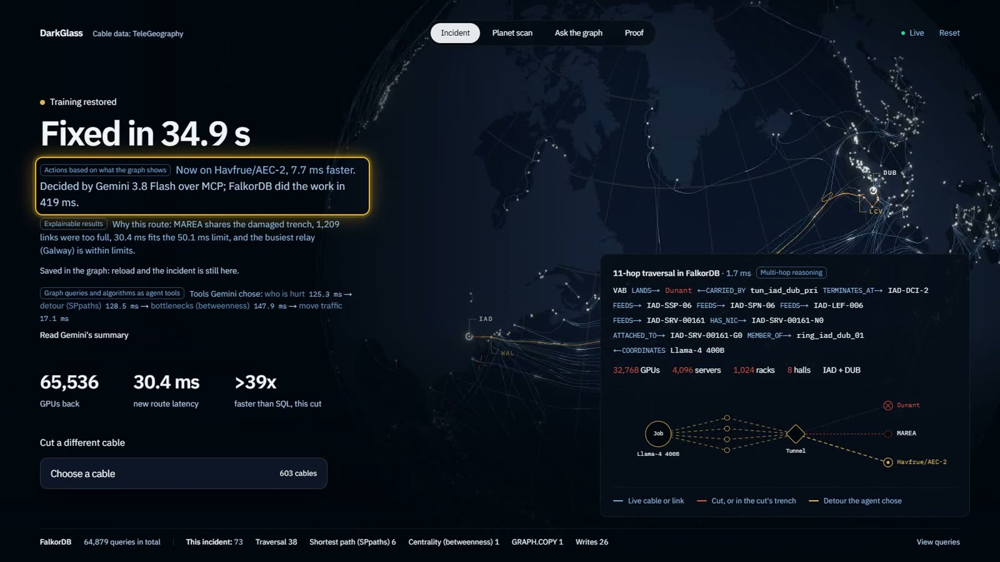
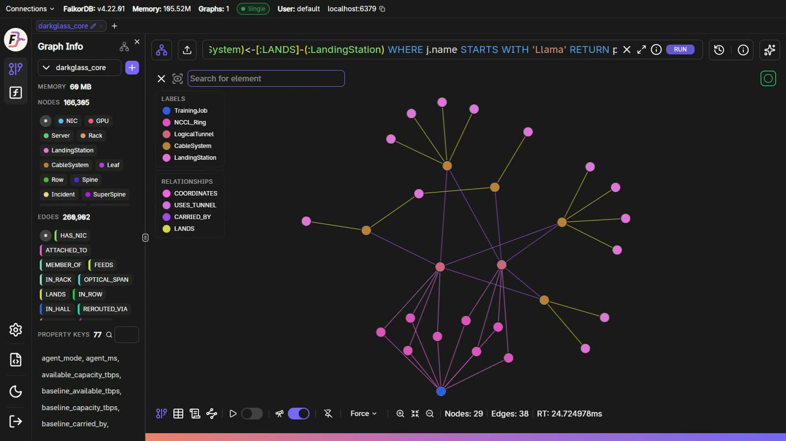
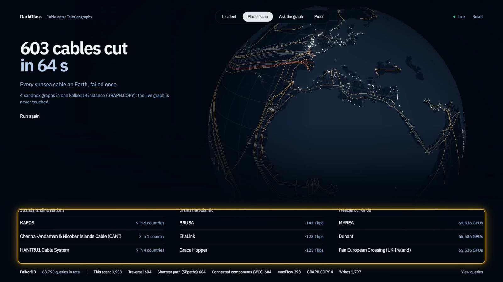
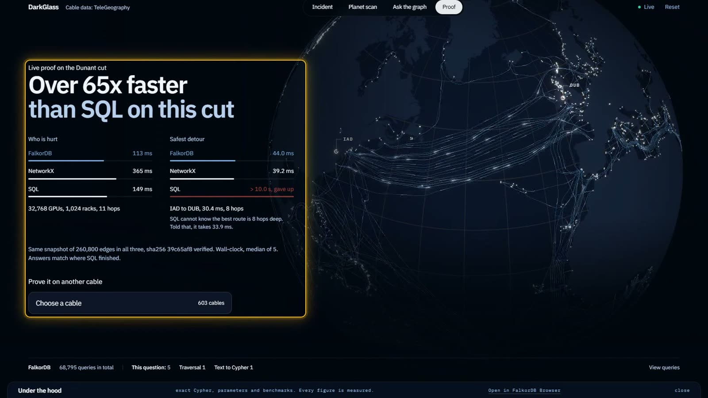

🌐 Try it live: https://8-234-112-123.sslip.io · ▶ Watch it happen (3 min): https://youtu.be/-fh9tKQJ4Z8 · Code: https://github.com/soujasK/DarkGlass
Somewhere off Virginia Beach, a cargo ship is dragging its anchor.
Not far inland, 65,536 GPUs are training one AI model. Half sit in Ashburn, Virginia, half in Dublin, Ireland. Every 45 milliseconds they stop, swap what they've learned, and carry on. The swap rides a fibre pair on a cable called Dunant. If one message is late, all 65,536 wait.
The anchor catches Dunant.
This post is about what happens next: 419 milliseconds of graph work that find out who is hurt, where the traffic can go, whether the new route will hold, and then move it. Every timestamp below is a real measurement from the demo video, counted in FalkorDB time: the clock only runs while the graph is working, not while Gemini is thinking about which tool to call next. Every query is the real one.
(Is this realistic? In 2024, three Red Sea cables were cut, reportedly by the dragging anchor of a sinking cargo ship. Anchors have damaged Baltic cables too. The cable map in this project is real, from TeleGeography. The GPU cluster is modelled; more on that below.)
Everything stops
Dunant's spans between Virginia Beach and France go dark. In the graph, that's one write: their relationships are retyped from :OPTICAL_SPAN to :SEVERED_SPAN, so every algorithm that follows simply cannot see them.
The gradient sync stalls. In this scenario, the frozen cluster costs $18,420 an hour: about five dollars a second, ticking.

A human operator now faces four questions, and each one crosses systems that normally don't talk to each other: the seabed, the optical spans, the tunnels, the switch fabric, the GPUs, the jobs.
DarkGlass keeps all of it in one FalkorDB graph: 603 real cables, 1,788 real landing stations, and a modelled AI supercomputer, about 166,000 nodes in all. An agent gets four tools over MCP, each one a FalkorDB query or algorithm, and Gemini decides which to call next.
The clock starts.
Who is hurt?
The first tool walks from the beach to the GPU. One Cypher pattern, 11 hops, four layers:
MATCH p = (s:LandingStation)-[:LANDS]->(c:CableSystem {id: $cable_id})
<-[:CARRIED_BY]-(t:LogicalTunnel)
-[:TERMINATES_AT]->(:BorderRouter)-[:FEEDS]->(:SuperSpine)-[:FEEDS]->(:Spine)
-[:FEEDS]->(:Leaf)-[:FEEDS]->(:Server)-[:HAS_NIC]->(:NIC)-[:ATTACHED_TO]->(:GPU)
-[:MEMBER_OF]->(ring:NCCL_Ring)<-[:COORDINATES]-(:TrainingJob)
WHERE (ring)-[:USES_TUNNEL]->(t)
RETURN length(p) AS hops, [n IN nodes(p) | coalesce(n.code, n.name, n.id)] AS nodes
LIMIT 1
Read it aloud and it's nearly English: the station lands the cable, the cable carries a tunnel, the tunnel ends at a border router, which feeds three tiers of switches, down to a server, its network card, its GPU, the GPU's sync ring, and the job.
In SQL, that's 11 joins across 11 tables. In a graph, it's the shape of the problem written down.
A second sweep finds every GPU behind the cut: 32,768 GPUs, 4,096 servers, 1,024 racks, 8 halls. Done 125 ms after the cut.

Where can the traffic go?
This is the question that made me choose a graph database, and the one that nearly broke the project.
"Find the fastest route from Ashburn to Dublin that avoids the damaged trench and has 3.2 Tbps free on every hop" has no fixed depth. The answer might be 6 hops or 12. I gave SQL a fair shot, on identical data:
| SQL allowed to search up to | Time | What it found |
|---|---|---|
| 4 hops | 0.8 ms | nothing |
| 6 hops | 4.4 ms | a worse route (33.5 ms) |
| 8 hops | 34.6 ms | ✅ the real best route, 30.4 ms |
| 12 hops | 1,770 ms | ✅ same route, 50× slower |
| no limit | doesn't finish in 10 s |
SQL has to be told how deep to look, and if you guess too shallow, it confidently hands you the wrong answer. FalkorDB's algo.SPpaths finds the 30.4 ms route in 0.8 ms of engine time, without being told anything.
The trap I fell into
But there's a catch that has nothing to do with speed. Dunant shares a trench with MAREA. Both cables leave the same Virginia Beach shelf, so in the graph their spans share a shared risk link group (srlg_id). If an anchor got Dunant, MAREA might be next. A detour onto MAREA would look perfect on a latency chart and be the worst possible decision.
My first version did the obvious thing: ask algo.SPpaths for the k fastest paths, then throw away any path through the bad trench.
It returned nothing. Near a shared shelf, all k fastest paths crossed the trench. A clean detour existed, just further down the list. Filtering after the search deleted every answer. Bounding the search with maxLen or maxCost didn't rescue it either: on this graph they missed valid paths or hit the timeout.
The fix was to change the graph instead of the result. For the length of one search, every span in the damaged trench, and every span without enough free capacity, gets a route weight of 1,000,000. Then:
MATCH (src:LandingStation {code: $src_code}), (dst:LandingStation {code: $dst_code})
CALL algo.SPpaths({
sourceNode: src, targetNode: dst,
relTypes: ['OPTICAL_SPAN'], weightProp: 'route_weight', pathCount: $k
}) YIELD path, pathWeight
RETURN [n IN nodes(path) | n.code] AS station_hops, pathWeight AS latency_ms
ORDER BY latency_ms
Then the weights go back. If the best path still weighs a million, there is genuinely no safe detour, and the agent says so instead of guessing.
The answer: Havfrue/AEC-2, 30.4 ms, 8 hops, nowhere near the damaged trench. 254 ms after the cut.
Will the new route hold?
A route can be fast and still funnel an ocean's worth of traffic through one small relay station. So the third tool runs algo.betweenness, which measures how many shortest paths pass through each station, and grades every station on the new route against the network's own 95th and 99th percentiles. "Busy" means busy for this network, not a magic number.
I didn't want to trust an algorithm I hadn't checked, so I ran the same calculation in NetworkX across all 1,790 stations. Full mode: the top 10 match exactly. The 32-station sample the agent uses for speed: 9 of 10 match, same #1. One thing I learned on the way: sampled scores aren't scaled back up to the whole graph, so compare rankings, not raw numbers.
Verdict: the busiest relay on the route, Galway, is within limits. 402 ms.
Move it
The last tool acts. In one atomic write it reserves bandwidth on every hop of the new route (all or nothing), demotes lower-priority backup traffic sharing those cables, and moves the training tunnel's CARRIED_BY relationship from Dunant to Havfrue/AEC-2.
The GPUs start talking again.

419 milliseconds of graph work. On screen, the whole fix took 34.9 seconds, because Gemini thinks between each step about which tool to call next. There's also a Playbook mode that runs the same four tools with no AI at all: it reaches the identical fix in 0.4 seconds.
That comparison is the most honest thing in the project. The AI decides what to ask. The graph does the work.
T+∞: show your work
An agent that silently moves traffic on a 65,536-GPU job would never be allowed near production. So DarkGlass explains itself:
Why this route: MAREA shares the damaged trench, 1,209 links were too full, 30.4 ms fits the 50.1 ms limit, and the busiest relay (Galway) is within limits.
Every tool is listed with its timing. Every number opens the exact Cypher that produced it. Gemini writes a plain-English summary. And the incident itself is saved into the graph, (:Incident)-[:SEVERED]->(:CableSystem) and -[:REROUTED_VIA]->, so the next time Dunant fails, the agent remembers what worked.
Because it's all one graph, you can open it in FalkorDB Browser and see the chain with your own eyes:

The question after the incident
Once Dunant is fixed, the obvious question is the scary one: what if it had been a different cable?
So DarkGlass cuts all of them. GRAPH.COPY clones the live graph into 4 sandbox graphs inside the same FalkorDB instance, and every one of the 603 cables is failed once, in parallel, without ever touching the real graph. For each cut:
algo.WCC(connected components) finds which landing stations fall off the network;algo.maxFlowmeasures how much North America to Europe capacity is left;algo.SPpathsmeasures how much slower the Ashburn to Dublin route gets.
603 failures, about a minute. KAFOS strands 9 stations across 5 countries. BRUSA drains 141 Tbps of Atlantic capacity. MAREA, Dunant and the Pan European Crossing each freeze the entire job.
(algo.maxFlow refused the real cable map, which has parallel spans and huge capacity ranges, so it runs on a derived whole-Gbps :FLOW_LINK layer. Real data always finds the edge cases.)

And when you just want to ask, Gemini turns plain English into Cypher that runs under GRAPH.RO_QUERY, so it can read but never write. On a 23-question eval with hand-written reference answers, it scored 66 out of 69.
Receipts
"Graphs are fast" is cheap. So the Proof tab runs the agent's questions on any cut in FalkorDB, NetworkX and SQLite, on identical data, verified by a sha256 of the 260,800-edge snapshot each engine reads back.
| FalkorDB | NetworkX | SQLite | |
|---|---|---|---|
| Detour search | 0.8 ms | 34 ms | 1,770 ms, and wrong below 8 hops |
| Bottleneck audit (32 sources) | 22 ms | 131 ms | — |
| Exact betweenness | 830 ms | 7,510 ms | — |
Full honesty: 0.8 ms is the search alone. The whole detour tool, including masking and restoring about 1,200 links, takes about 50 ms, similar to NetworkX end to end on this layer. The real win is that it all happens inside the database the agent already lives in: no export, no second copy of the truth.

Five things 419 milliseconds taught me
- Don't filter after you search. Shape the graph before you search. Filtering the results deleted every valid detour; masking the trench before the search fixed it.
- Every AI agent needs a boring twin. The no-AI Playbook is my correctness oracle, my demo that runs without cloud keys, and my answer to "what does the LLM actually add?"
- Verify the algorithm, not just the speed. Ten minutes against NetworkX turned "I think centrality is right" into "it matches."
- Timeouts hide everywhere. My planet scan kept failing, and the cause was a client library's 5-second socket default, not the database. FalkorDB's own query limit defaults to 1 second, so the repo's Docker setup raises it to 15.
- LLMs reach for features you don't have. Gemini kept writing
=~regexes, which FalkorDB doesn't support. One line in the prompt fixed it, and the eval caught every regression after.
Run it yourself
git clone https://github.com/soujasK/DarkGlass.git
cd DarkGlass
powershell -ExecutionPolicy Bypass -File .\start.ps1 # Windows
./start.sh # macOS / Linux
Or skip the install and use the live demo: https://8-234-112-123.sslip.io
Docker, Python 3.11+ and Node 20+. No API keys. Pick any of the 603 cables, cut it, and watch.
The internet is a graph. An AI supercomputer is a graph. When one breaks, the damage is a path through both, and with the right database an agent can walk that path, choose its own tools, act, and explain itself, all before the next gradient sync is due.
🌐 Cut a cable yourself: https://8-234-112-123.sslip.io ▶ Watch the 419 milliseconds: https://youtu.be/-fh9tKQJ4Z8 ⭐ Code: https://github.com/soujasK/DarkGlass
Built for the WeMakeDevs x FalkorDB Graph Hacks, Track 01: Agents That Act on Connected Data. Cable data © TeleGeography (CC BY-NC-SA 3.0). The GPU cluster, capacities and jobs are modelled; "Llama-4 400B MoE pretrain" is an illustrative name with no connection to Meta.